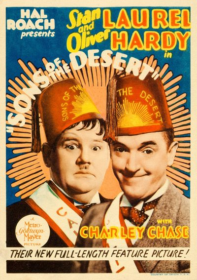
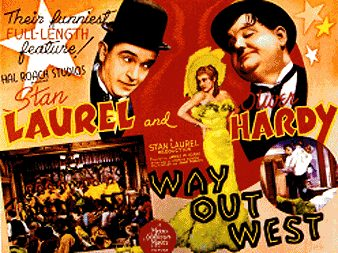
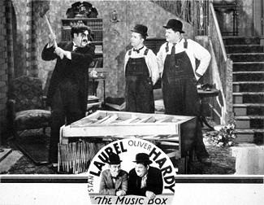
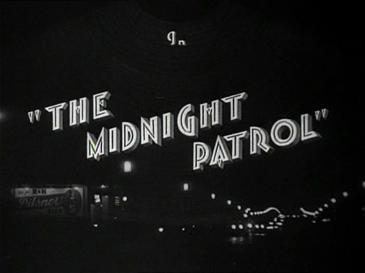

THE STANFORD THEATRE
Now Showing
·
Upcoming
·
Past
·
Search
November 30 - December 24, 2018
Laurel & Hardy, plus Christmas films
5 bills
November 30 - December 2
Helpmates (1932)
20 min

Sons of the Desert (1933)
63 min

Way Out West (1937)
65 min
December 7 - 9
Babes in Toyland (1934)
75 min

The Music Box (1932)
28 min
Busy Bodies (1932)

The Midnight Patrol (1933)
20 min
December 14 - 16
Miracle on 34th Street (1947)
96 min
The Bishop's Wife (1947)
109 min
December 21 - 23
The Shop Around the Corner (1940)
99 min
Meet Me in St. Louis (1944)
113 min
December 24
It's a Wonderful Life (1946)
125 min